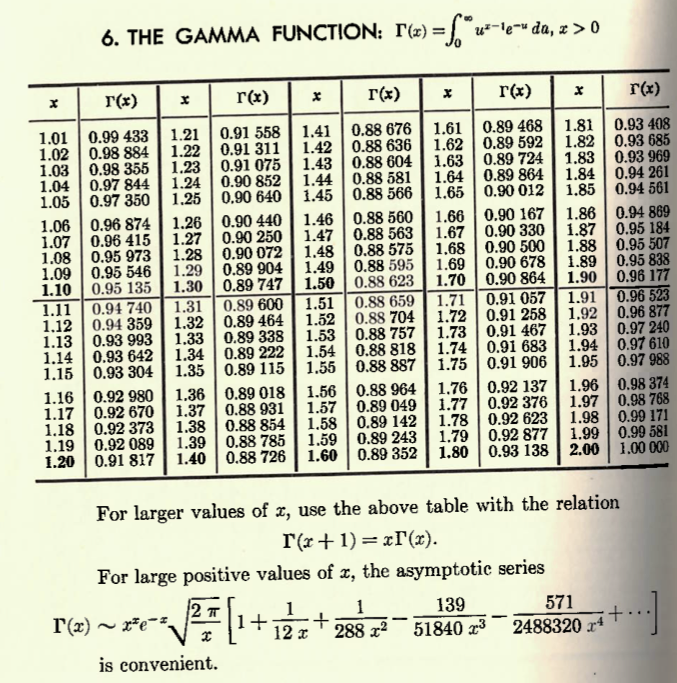

Class Session Goals:
Can we approximate a function using polynomials?
If \(f\) has continuous derivatives through order \(n+1\) on an interval containing \(a\) and \(x\), Taylor’s Theorem gives
\(\displaystyle f(x)=\sum_{k=0}^{n}\frac{f^{(k)}(a)}{k!}(x-a)^k+R_n(x)\),
where \(\displaystyle R_n(x)=\frac{f^{(n+1)}(c)}{(n+1)!}(x-a)^{n+1}\) for some \(c\) between \(a\) and \(x\).

As \(n\) increases, the Taylor polynomials form a sequence.
If \(R_n(x)\to0\), then
\(\displaystyle f(x)=\sum_{k=0}^{\infty}\frac{f^{(k)}(a)}{k!}(x-a)^k.\)
When does this infinite series converge, and when does it equal \(f(x)\)?
An infinite sequence is an ordered list of numbers:
\(a_1,a_2,a_3,\ldots,a_n,\ldots\)
Each number \(a_n\) is a term. The integer \(n\) is the index.
We write \(\{a_n\}_{n=1}^{\infty}\), or simply \(\{a_n\}\).
For example, \(\{2^n\}_{n=1}^{\infty}=\{2,4,8,16,\ldots\}\).
1.Explicit formula gives a term directly from its index as a function of the index:
\(a_n=2^n,\quad n\ge 1.\)
\(b_1=2,\quad b_n=2b_{n-1},\quad n\ge 2.\)
Here \(\{a_n\}=\{b_n\}\) since each term is the same.
An arithmetic sequence has a constant difference between consecutive terms.
\(3,7,11,15,19,\ldots\)
\(a_1=3,\quad a_n=a_{n-1}+4,\quad n\ge 2.\)
\(a_n=3+4(n-1)=4n-1.\)
In general, \(a_n=a_1+(n-1)d\), where \(d\) is the common difference.
A geometric sequence has a constant ratio between consecutive nonzero terms.
\(2,-\frac{2}{3},\frac{2}{9},-\frac{2}{27},\frac{2}{81},\ldots\)
\(a_1=2,\quad a_n=-\frac{1}{3}a_{n-1},\quad n\ge 2.\)
\(a_n=2\left(-\frac{1}{3}\right)^{n-1}.\)
In general, \(a_n=a_1r^{n-1}\), where \(r\) is the common ratio.
Find a formula for the \(n\)th term, starting with \(n=1\):
\(-\frac{1}{2},\frac{2}{3},-\frac{3}{4},\frac{4}{5},-\frac{5}{6},\ldots\)
The numerators are \(n\), and the denominators are \(n+1\).
The factor \((-1)^n\) gives a negative sign when \(n\) is odd.
\(a_n=\dfrac{(-1)^n n}{n+1}.\)
Find a formula for the \(n\)th term, starting with \(n=1\):
\(\frac{3}{4},\frac{9}{7},\frac{27}{10},\frac{81}{13},\frac{243}{16},\ldots\)
The numerators form a geometric sequence: \(3^n\).
The denominators form an arithmetic sequence: \(4+3(n-1)=3n+1\).
\(a_n=\dfrac{3^n}{3n+1}.\)
Suppose \(a_1=\frac{1}{2}\) and \(a_n=a_{n-1}+\left(\frac{1}{2}\right)^n\) for \(n\ge 2\).
Write the first four terms and look for a formula.
\(a_1=\frac{1}{2},\quad a_2=\frac{3}{4},\quad a_3=\frac{7}{8},\quad a_4=\frac{15}{16}.\)
\(a_n=\dfrac{2^n-1}{2^n}=1-\dfrac{1}{2^n}.\)
Substitution verifies the initial value and recurrence.
We graph the points \((n,a_n)\) with \(n\) on the horizonal axis and the value of the sequence on the vertical axis.
For \(a_n=1-\dfrac{1}{2^n}\):
| \(n\) | 1 | 2 | 3 | 4 | 5 |
|---|---|---|---|---|---|
| \(a_n\) | .5 | .75 | .875 | .9375 | .96875 |
A sequence converges if its terms approach a finite number \(L\) as \(n\) increases.
We write \(\displaystyle \lim_{n\to\infty}a_n=L\), or \(a_n\to L\).
A sequence that does not converge diverges.
What is the behavior of each sequence as \(n \to \infty\)?
The terms grow without bound. The sequence diverges to \(\infty\).
The terms approach \(1\). The sequence converges to \(1\).
The terms alternate between \(-1\) and \(1\). The sequence diverges.
The signs alternate, but the magnitudes approach \(0\). The sequence converges to \(0\).
A sequence \(\{a_n\}\) converges to \(L\) if, for every \(\epsilon>0\), there is an integer \(N\) such that
\(|a_n-L|<\epsilon\quad\text{for all }n\ge N.\)
If the terms grow without bound, we write
\(\displaystyle \lim_{n\to\infty}(1+3n)=\infty.\)
If the terms decrease without bound, we write
\(\displaystyle \lim_{n\to\infty}(-5n+2)=-\infty.\)
Suppose \(a_n=f(n)\) for \(n\ge 1\).
If \(\displaystyle \lim_{x\to\infty}f(x)=L\) for a finite number \(L\), then
\(\displaystyle \lim_{n\to\infty}a_n=L.\)
Suppose \(a_n\to A\) and \(b_n\to B\), with \(A\) and \(B\) finite.
Determine whether \(\left\{5-\dfrac{3}{n^2}\right\}\) converges. If so, find its limit.
Determine whether \(\left\{\dfrac{3n^4-7n^2+5}{6-4n^4}\right\}\) converges.
Determine whether \(\left\{\dfrac{2^n}{n^2}\right\}\) converges.
Find \(\displaystyle \lim_{n\to\infty}\left(1+\frac{4}{n}\right)^n\).
Suppose \(a_n\le b_n\le c_n\) for all sufficiently large \(n\).
If \(a_n\to L\) and \(c_n\to L\), then \(b_n\to L\).
A useful special case is
\(-|b_n|\le b_n\le |b_n|.\)
If \(|b_n|\to0\), then \(b_n\to0\).
Find \(\displaystyle \lim_{n\to\infty}\frac{\cos n}{n^2}\).
Since \(-1\le\cos n\le1\),
\(\displaystyle -\frac{1}{n^2}\le\frac{\cos n}{n^2}\le\frac{1}{n^2}.\)
Both bounding sequences approach \(0\).
\(\displaystyle \lim_{n\to\infty}\frac{\cos n}{n^2}=0.\)
Find \(\displaystyle \lim_{n\to\infty}\left(-\frac{1}{2}\right)^n\).
\(\displaystyle -\frac{1}{2^n}\le\left(-\frac{1}{2}\right)^n\le\frac{1}{2^n}.\)
Since both bounds approach \(0\), the Squeeze Theorem gives
\(\displaystyle \lim_{n\to\infty}\left(-\frac{1}{2}\right)^n=0.\)
For \(\{r^n\}_{n=1}^{\infty}\):
| Value of \(r\) | Behavior as \(n\to\infty\) |
|---|---|
| \(|r|<1\) | Converges to \(0\) |
| \(r=1\) | Converges to \(1\) |
| \(r>1\) | Diverges to \(\infty\) |
| \(r=-1\) | Diverges |
| \(r<-1\) | Diverges |
A sequence is bounded above if some number \(M\) satisfies \(a_n\le M\) for every \(n\).
It is bounded below if some number \(m\) satisfies \(m\le a_n\) for every \(n\).
It is bounded if it is bounded above and below:
\(m\le a_n\le M\quad\text{for every }n.\)
For example, \(0<1/n\le1\), so \(\{1/n\}\) is bounded.
Every convergent sequence is bounded.
Does every bounded sequence converge?
Consider \(a_n=(-1)^n\).
\(-1\le a_n\le1\), but the terms do not approach one value.
Boundedness alone does not guarantee convergence.
A sequence is increasing if \(a_n\le a_{n+1}\) for every \(n\).
It is decreasing if \(a_n\ge a_{n+1}\) for every \(n\).
A sequence that is increasing or decreasing is monotone.
If the inequalities hold for all \(n\ge n_0\), the sequence is eventually monotone.
Equality is allowed in these definitions.
To compare consecutive terms, examine \(a_{n+1}-a_n\).
For positive sequences \(a_n\ge0\), we can compare \(a_{n+1}/a_n\) with \(1\).
A bounded sequence that is eventually monotone converges.
In particular:
This is a tool to establish that a limit exists.
Use the Monotone Convergence Theorem for \(a_n=\dfrac{4^n}{n!}\).
The first few terms are \(4,8,\dfrac{32}{3},\dfrac{32}{3},\dfrac{128}{15},\ldots\)
\(\displaystyle \frac{a_{n+1}}{a_n}=\frac{4}{n+1}\le1\quad\text{when }n\ge3.\)
The sequence is decreasing for \(n\ge3\) and bounded below by \(0\).
Therefore, the sequence converges.
We have established convergence. Let \(a_n\to L\).
Omitting the first term does not change the limit, so \(a_{n+1}\to L\).
\(\displaystyle a_{n+1}=\frac{4}{n+1}a_n.\)
Taking limits gives \(L=0\cdot L=0\).
\(\displaystyle \lim_{n\to\infty}\frac{4^n}{n!}=0.\)
Let \(a_1=2\) and \(\displaystyle a_{n+1}=\frac{a_n}{2}+\frac{1}{2a_n}\) for \(n\ge1\).
Write the first four terms. What do they suggest?
\(\displaystyle 2,\frac{5}{4},\frac{41}{40},\frac{3281}{3280},\ldots\)
The terms appear to decrease toward \(1\).
We will establish a lower bound and prove monotonicity.
Since \(a_1>0\), the recurrence gives \(a_n>0\) for every \(n\).
Now calculate
\(\displaystyle a_{n+1}-1=\frac{a_n^2+1-2a_n}{2a_n}=\frac{(a_n-1)^2}{2a_n}\ge0.\)
Therefore, \(a_{n+1}\ge1\).
Together with \(a_1=2\), this gives \(a_n\ge1\) for every \(n\).
Using \(a_n\ge1\),
\(\displaystyle a_{n+1}-a_n=\frac{a_n}{2}+\frac{1}{2a_n}-a_n\)
\(\displaystyle =\frac{1-a_n^2}{2a_n}\le0.\)
The sequence is decreasing and bounded below by \(1\).
The Monotone Convergence Theorem guarantees convergence.
Let \(a_n\to L\). Since \(a_n\ge1\), we have \(L\ge1\).
Taking limits in the recurrence gives
\(\displaystyle L=\frac{L}{2}+\frac{1}{2L}.\)
\(2L^2=L^2+1\), so \(L^2=1\).
Since \(L\ge1\), the limit is \(L=1\).